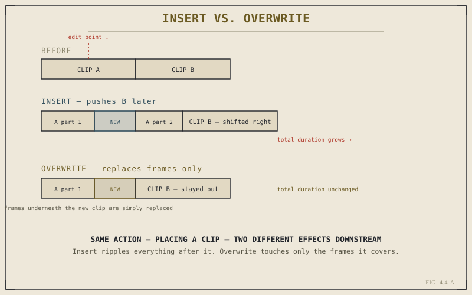

Getting a clip from the Media Pool onto a timeline sounds like it should be one action. In Resolve, it's actually four distinct actions, and the difference between them isn't cosmetic — each one has a genuinely different effect on everything already sitting on the timeline. Understanding this quartet precisely, rather than defaulting to whichever one happens to be the most familiar button, is what separates deliberate editing from editing that occasionally produces surprising, unintended results.
Append: The Simplest Case
Append adds a clip to the very end of a track, after everything already there, with no need to specify where — there's only one place it can go. This is the natural action for building up a rough sequence quickly, clip after clip, without needing to think about playhead position at all. It's simple enough that it rarely causes confusion, which is exactly why it's worth starting with before the more nuanced three.
Insert: Making Room by Pushing Everything After It Later
Insert places a clip at the playhead's position, and — this is the important part — pushes everything already on that track after that point later in time, by exactly the duration of the newly inserted clip. Nothing existing gets overwritten; the timeline simply gets longer at that point, with the new clip wedged into the middle and everything downstream shifted to make room. This is sometimes called a ripple edit for exactly that reason: the change ripples forward through the rest of the sequence.

The same act — placing a clip — with two structurally different consequences for the sequence.
Overwrite: Replacing Frames Without Shifting Anything
Overwrite also places a clip at the playhead's position, but behaves completely differently downstream: rather than pushing anything later, it simply writes the new clip over whatever frames it now occupies, on that track, for its duration — leaving everything after the new clip's out point exactly where it already was. If the new clip is shorter than what it's covering, whatever remains of the original clip after the overwritten section stays in place, picking back up right where the new clip ends. Total sequence duration on that track is unaffected either way.
Insert changes the sequence's total shape — everything after the edit point moves. Overwrite changes only what's visible in the space the new clip occupies — nothing else moves at all.
The practical difference matters enormously once a sequence has structure worth preserving. Overwriting a cutaway shot into the middle of an interview keeps the interview's overall timing and sync with a separate audio track intact, since nothing shifts. Inserting the same cutaway would push the rest of the interview later, potentially breaking sync with anything on other tracks that wasn't meant to move. Neither behavior is universally "correct" — they're different tools for different intentions, and choosing the wrong one is one of the more common sources of an accidentally desynced sequence.
Replace: Swapping Content While Preserving Position and Duration
Replace solves a narrower, specific problem: you already have a clip on the timeline, correctly placed and correctly timed, but you want to swap out what it's actually showing — a different take of the same moment, for instance — without disturbing that clip's position or duration on the timeline at all. Replace matches the new source footage into the existing clip's exact timeline position and length, typically using a reference point you set (often the playhead position within both the source and the target clip) to align them meaningfully rather than just starting from frame zero of the new source.
This is a genuinely different action from the other three, because it's the only one of the four that doesn't primarily concern itself with placement — the placement was already correct. It concerns itself with content, which makes it the right tool specifically for "same timing, different footage" situations, distinct from Insert and Overwrite, which are both fundamentally about where a clip lands rather than what it contains.
Three-Point Editing: The Logic Underneath All Four
All four of these actions rely on a shared underlying logic worth naming explicitly, even briefly: three-point editing. An edit generally needs three defined points to be unambiguous — commonly, an in and out point on the source clip, plus one point on the timeline (or, in some cases, an in and out on the timeline instead, with the source's duration implied). Resolve calculates whatever fourth point is needed automatically from the three you've provided. Chapter 5.5 returns to this idea in full technical depth once Part V's trim vocabulary is established; for now, it's enough to recognize that Insert, Overwrite, Append, and Replace are all specific, named applications of this same three-point logic, not four unrelated behaviors you need to memorize independently.
With clips reliably getting onto the timeline in the way you actually intend, Chapter 4.5 turns to a related, practical concern: navigating a timeline efficiently once it has real length and complexity, using markers and navigation shortcuts to move around quickly rather than scrubbing manually every time.
Key Concepts to Remember
- Append adds to the end of a track with no positioning decisions required — the simplest of the four actions.
- Insert pushes everything after the edit point later, growing the sequence; Overwrite replaces only the covered frames, leaving total duration unchanged.
- Replace swaps a clip's content while preserving its existing position and duration — the right tool when timing is already correct.
- All four are specific applications of three-point editing — Resolve calculating a missing fourth point from three you've provided.
Cross-References Forward
| → Ch. 4.5 | Moves from placing clips to navigating a growing timeline efficiently using markers and shortcuts. |
| → Ch. 5.5 | Three-Point and Four-Point Editing — the full technical treatment of the logic introduced briefly here. |
| → Pt. VII | Transitions, Titles & Motion Graphics — builds on Insert and Overwrite when placing generators and titles. (Not yet published.) |